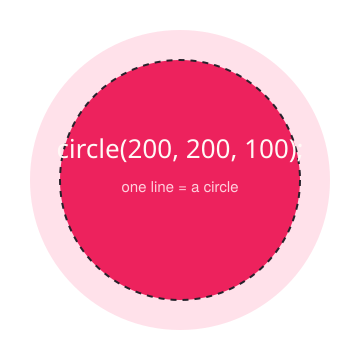

p5.js
PROCESSING COMMUNITY DAY 2026 · 25 YEARS
No Code?
No Problem.
Contributing to open source through p5.js Chinese translation
lirenjie95 · Community Steward
i18n & DevOps
Suzhou · Oct 17
Shanghai · Oct 31
Hi, I'm lirenjie95
Community steward at p5.js
I help keep the community welcoming and well-organized.
I take care of i18n & DevOps
i18n = internationalization: making p5.js readable in many languages, especially Chinese.
Most of my work is reviewing Chinese translations — and most contributors aren't programmers.
37
PRs reviewed
13
PRs authored
15
commits
7
issues opened
Source: p5.js + p5.js-website · github.com/processing
02 / 23
What is p5.js?

A friendly JavaScript library for creative coding — draw, animate, and make things interactive in your browser.
It's the web sibling of Processing, built for artists, designers, and beginners — not just engineers.
Millions use it to learn code by making art.
lirenjie95 · PCD 2026
03 / 23
Open source is bigger than code
A project needs many hands — most of them never write code.
Every button you've ever clicked in free software exists because someone contributed it.
Code
Documentation
Design
Community
lirenjie95 · PCD 2026
04 / 23
WHY TRANSLATE?
Docs are a door.
Translation opens it.
Chinese readers can't learn what they can't read. Translating the docs lowers the door for millions of people.
circle(x, y, d) draws a circle
→
circle(x, y, d) 绘制一个圆形
信达雅 — faithful · expressive · elegant
You don't need to code
English majors, translation majors, designers — if you can read English and write natural Chinese, you already have the skill.
No algorithms. No build tools. No jargon. Just good writing.
Translation is the lowest door into open source — and it teaches you the workflow you'll use everywhere else.
“You are a future contributor — not an outsider.”
This talk treats you as the person who will make the next translation better.
lirenjie95 · PCD 2026
06 / 23
THE HANDS-ON PART
Let's do it together.
From zero to your first translation PR — step by step.
Step 1 · Git in 60 seconds
Git is a time machine for your files — it remembers every saved version.
commit = save a snapshot
push = upload it to GitHub
Install it once, then these five commands are all you repeat.
git clone https://github.com/processing/p5.js-website.git
cd p5.js-website
git checkout -b my-translation
git add .
git commit -m "Translate the Donate page"
git push origin my-translation
lirenjie95 · PCD 2026
08 / 23
Step 2 · GitHub is the shared workspace
Fork
copy to your account
→
Branch
your own draft copy
→
Commit
save a snapshot
→
Pull Request
ask to merge
A Pull Request (PR) is politely asking the project: “please merge my changes into the official version.”
lirenjie95 · PCD 2026
09 / 23
Step 3 · Find an issue — or file your own
Find an issue
An issue is a tracked to-do item on the repo. The repo auto-creates 🌍 Update translations for X issues, labelled Help Wanted · needs translation · lang-zh-Hans. Comment to claim one — a maintainer assigns it to you.
File your own
Notice a missing page or a clunky phrase? Open an issue describing it, ask to be assigned — then turn it into a PR.
Either way → create a PR that links the issue → then ask for review
lirenjie95 · PCD 2026
10 / 23
For real: from issue to PR
FIND AN ISSUE — on tracker #1150, I told SihongShen to go ahead
FILE YOUR OWN — I noticed missing pages in #783
I compiled every untranslated page into an issue, asked to be assigned, then shipped the fixes as a PR.
An issue is how work gets tracked — and how you get credit for spotting it.
Issue → get assigned → PR → merge.
Real GitHub issues · github.com
11 / 23
Step 4 · See your changes locally
Run the website on your own machine, so you can preview your translation before sharing it.
The exact steps are in the repo's README and contributing guide — always trust those first.
npm install # install the tools
npm run dev # start the site
# open http://localhost:4321
# see your page, proofread, done!
lirenjie95 · PCD 2026
12 / 23
Step 5 · Submit → review → merge
Open PR
→
Reviewer comments
→
You fix
→
Approved
→
Merged ✓
You'll get kind, specific feedback — not a test. Let me show you three real ones.
lirenjie95 · PCD 2026
13 / 23
Translation = writing good Chinese
严复的三字准则 · YAN FU'S THREE RULES, 1898
信 Faithful · 达 Expressive · 雅 Elegant
What matters isn't your English — it's your Chinese.
Non-native translations often come out awkward. That's why we need native Chinese speakers — people like you.
“We prefer a native Chinese speaker — non-native translations often end up with awkward phrasing.”
— my reply on the v2 Teachers' Guide issue
信 Faithful · 先专业直译，拗口再意译
“把……想象成……会很有帮助”
把这个函数想象成饼干模具，会更容易理解
达 Expressive · 主动，别被动
这样每一棵树都可以被自定义
以便自定义每一棵树
雅 Elegant · 用词自然，术语统一
“原旨” · sketch 又译“原稿”
“使命” · sketch 全篇统一“草图”
Real examples from my PR reviews · github.com
14 / 23
Case 1 · PR #715 — Donate page · by Darrenhqf
First-time contributor Darrenhqf translated one page.
I reviewed → suggested better wording (原旨 → 使命) → they fixed → merged.
Your first PR can be small — a single page is enough.
Real GitHub PR · github.com
15 / 23
Case 2 · PR #1568 · by GanLuy1223
GanLuy1223's v2 teacher's guide translation broke the build.
My review caught the CI failure and a wrong keyword (async should be await). Contributor fixed both; I approved; she merged.
Review catches what you can't see working alone.
Real GitHub PR · github.com
16 / 23
Case 3 · PR #1302 · by Chiuye
Chiuye translated organizing-code-with-functions.
Review is about nuance — 信达雅 in practice, consistent terms. 11 comments → polished → approved.
Good review makes the translation read naturally.
Real GitHub PR · github.com
17 / 23
luciawang0901 · 1/3 — she volunteered
luciawang0901 is an English-major student. She found my post on 小红书 and — with zero tech background — just raised her hand to translate “Setting Up Your Environment”.
That's how it starts: an issue where you say “I'd like to help” — not a line of code.
No code, no Git — just a willingness to help.
Real contributor journey · github.com
18 / 23
luciawang0901 · 2/3 — she translated & iterated
One translation landing on both docs branches — with one accidental detour:
PR #1433 · merged into main · Jun 15
PR #1442 · closed unmerged — she had pushed to a new branch · Jun 11 → 16
PR #1462 · merged into 2.0 · Jun 24
1 commit · 1 file · translation/zh-Hans-2.0-tutorial
ksen0 approves it on Jun 24:
Real contributor journey · github.com
19 / 23
luciawang0901 · 3/3 — her bug report became a merged fix
1
JUN 16 · ISSUE
luciawang0901 files #1446 — after switching to Chinese, tutorial pages still render in English.
2
JUN 16 · MY REPLY
Same day — we talk it over offline, I confirm it is a bug, and post the cause plus the one-line fix.
3
JUN 16 · MY PR
PR #1447 — I open the fix: one shared helper, 12 collection configs, +72 −14.
4
JUN 19 · MERGED
Nwakaego-Ego tests it and confirms the fix works; ksen0 merges into main, then ports it to 2.0.
Real contributor journey · github.com
20 / 23
Our take on AI
BACKUP
We don't let AI write translations — quality needs human judgment.
But AI is a great helper — for setup, explanations, and unsticking yourself.
Every translation is human-reviewed. Want a review? Find me — lirenjie95.
ASKING WORKBUDDY
You
“I want to contribute to an open-source repo — help me set up my dev environment.”
WorkBuddy
Sure — I'll walk you through git clone → npm install → first PR.
lirenjie95 · PCD 2026
21 / 23
Two ways · fix a failing clone / push
BACKUP
clone or push over HTTPS keeps failing?
You have two alternatives — both often just work behind firewalls and proxies:
git://github.com/... — the classic trick
git@github.com:... — SSH, the modern standard
Swap the URL, push again — your translation is on its way.
# option 1 — the git:// protocol
git remote set-url origin "
git://github.com/processing/p5.js-website.git"
# option 2 — switch to SSH
git remote set-url origin "
git@github.com:processing/p5.js-website.git"
git push origin my-translation
lirenjie95 · PCD 2026
22 / 23
Q&A
Come translate with us.
Your first PR is one translation away — and I'll review it.
github.com/processing/p5.js-website
p5js.org
Find me on GitHub: @lirenjie95